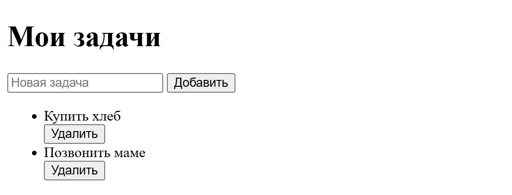

Алғашқы жоба: тапсырмалар тізімі
Бір қосымшаны — тапсырмалар тізімін — екі тәсілмен жасаймыз: Flask-та және Django-да. Бір нұсқаны таңдап, оны соңына дейін өтіңіз. Әрқайсысында екі бөлім бар: алдымен ең қарапайым тізім, содан кейін дерекқор, жою және «орындалды» белгісі. Flask-қа шамамен 30 минут, Django-ға шамамен бір сағат кетеді.
Енді ғана бастап жатырсыз ба? Алдымен «Нөлден» сабақтарын өтіңіз, ал бейтаныс сөздерді сөздіктен қараңыз.

Не қажет болады
Бастамас бұрын мұны тексеріңіз, сонда қадамдар қатесіз өтеді. Python-ды қалай орнатуды және терминалды қалай ашуды білмейсіз бе? Алдымен «Компьютерді дайындауды» өтіңіз.
- Python 3.12 немесе одан жаңасы: терминалдағы
python --versionкомандасы. - Код редакторы, мысалы VS Code.
- Жобаға арналған, терминалда ашылған бөлек бос қалта.
- Python негіздері: функциялар, тізімдер, сөздіктер (жол картасының 1-қадамы).
Командалар Windows-қа арналған. macOS пен Linux-та python орнына python3 деп жазыңыз, ал виртуалды ортаны source .venv/bin/activate командасымен іске қосыңыз. Белгіленген қадамдар осы браузерде сақталады — кейін оралып, жалғастыра беруге болады. Бірдеңе дұрыс болмаса, беттің төменгі жағындағы жиі кездесетін қателерге қараңыз.
1-нұсқа. Flask-тағы тапсырмалар тізімі
Flask 3.1, шамамен 30 минут. Бір файлдағы бір қосымша: тізімі бар бет және тапсырма қосатын форма.
6 қадамның 0 қадамы өтілді
-
1-қадам. Орта жасап, Flask-ты орнатыңыз
Виртуалды орта жобаның кітапханаларын жүйенің қалған бөлігінен бөлек сақтайды. Командалар Windows үшін және macOS пен Linux үшін сәл өзгеше: өз жүйеңізді таңдаңыз, сайт таңдауыңызды есте сақтайды.
Windows (PowerShell немесе пәрмен жолы)
Терминалpython -m venv .venv .venv\Scripts\activate pip install flaskmacOS және Linux (Терминал)
Терминалpython3 -m venv .venv source .venv/bin/activate pip install flaskКүтілетін нәтиже
Жоба қалтасында
.venvқалтасы пайда болды, ал терминал жолының басында(.venv)белгісі тұр: орта қосулы. Орнатудан кейінгі соңғы жол:Successfully installed blinker-1.9.0 click-8.5.1 flask-3.1.3 itsdangerous-2.2.0 jinja2-3.1.6 markupsafe-3.0.4 werkzeug-3.1.9
Нұсқа нөмірлері жаңарақ болуы мүмкін — бұл қалыпты жағдай. Орнатуды
flask --versionкомандасымен тексеруге болады: ол Python, Flask және Werkzeug нұсқаларын көрсетеді. -
2-қадам. Қосымшаны жазыңыз
app.pyфайлын жасаңыз. Әзірге тапсырмалар кәдімгі тізімде — сервердің жадында сақталады.app.pyfrom flask import Flask, redirect, render_template_string, request, url_for app = Flask(__name__) tasks = [] PAGE = """ <!doctype html> <title>Мои задачи</title> <h1>Мои задачи</h1> <form method="post"> <input name="title" placeholder="Новая задача" required> <button>Добавить</button> </form> <ul> {% for task in tasks %}<li>{{ task }}</li>{% endfor %} </ul> """ @app.route("/", methods=["GET", "POST"]) def index(): if request.method == "POST": title = request.form.get("title", "").strip() if title: tasks.append(title) return redirect(url_for("index")) return render_template_string(PAGE, tasks=tasks)Күтілетін нәтиже
Терминал әзірге ештеңе шығармайды: файл енді ғана жасалды, серверді келесі қадамда іске қосамыз. Жоба қалтасында енді екі элемент бар:
.venv/ app.py
Файл атауы маңызды: 3-қадамдағы
flask --app appкомандасы дәлapp.pyфайлын іздейді. -
3-қадам. Серверді іске қосыңыз
--debugжалаушасы файлды әр сақтаған сайын серверді қайта іске қосады және қателерді түсінікті етіп көрсетеді.Терминалflask --app app run --debugКүтілетін нәтиже
Терминал шамамен мынаны көрсетеді және сервермен бос болмай қалады:
* Serving Flask app 'app' * Debug mode: on WARNING: This is a development server. Do not use it in a production deployment. Use a production WSGI server instead. * Running on http://127.0.0.1:5000 Press CTRL+C to quit * Restarting with stat * Debugger is active! * Debugger PIN: 700-095-102
WARNING жолы қате емес: Flask кірістірілген сервер тек әзірлеуге арналғанын еске салады. Сіздің PIN басқа болады. Бұл терезені жаппаңыз, жаңа командаларды терминалдың екінші терезесінде енгізіңіз.
-
4-қадам. Нәтижені тексеріңіз
Браузерде
http://127.0.0.1:5000/мекенжайын ашып, бірнеше тапсырма қосыңыз. Назар аударыңыз: сервер қайта іске қосылғаннан кейін тізім тазаланады — деректер тек жадта болды. Оларды іске қосулар арасында сақтауды дерекқор біледі, бұл келесі қадам.Қалай көрінуі керек

Екі тапсырма форма арқылы қосылды. Әзірге безендіру жоқ: бұл CSS-сіз таза HTML. -
2-бөлім. Дерекқор және жою
5-қадам. Тапсырмаларды SQLite-та сақтаңыз
app.pyфайлын толығымен осы кодпен ауыстырыңыз.sqlite3модулі Python-ның құрамында бар, ештеңе орнатудың қажеті жоқ.tasks.dbдерекқор файлы алғаш іске қосқандаapp.pyжанында пайда болады. Сұраулардағы?белгілері — параметрлер: мәндерді Python өзі қауіпсіз қояды, сондықтан пайдаланушы енгізген мәтін SQL-сұраудың өзін өзгерте алмайды. Толығырақ — «Дерекқорлар» бөлімінде.app.pyimport sqlite3 from pathlib import Path from flask import Flask, redirect, render_template_string, request, url_for app = Flask(__name__) DB = Path(__file__).with_name("tasks.db") PAGE = """ <!doctype html> <title>Мои задачи</title> <h1>Мои задачи</h1> <form method="post" action="{{ url_for('add') }}"> <input name="title" placeholder="Новая задача" required> <button>Добавить</button> </form> <ul> {% for task in tasks %} <li> {{ task["title"] }} <form method="post" action="{{ url_for('delete', task_id=task['id']) }}"> <button>Удалить</button> </form> </li> {% endfor %} </ul> """ def query(sql, params=()): conn = sqlite3.connect(DB) conn.row_factory = sqlite3.Row try: rows = conn.execute(sql, params).fetchall() conn.commit() return rows finally: conn.close() query("CREATE TABLE IF NOT EXISTS tasks (id INTEGER PRIMARY KEY, title TEXT NOT NULL)") @app.get("/") def index(): tasks = query("SELECT id, title FROM tasks ORDER BY id") return render_template_string(PAGE, tasks=tasks) @app.post("/add") def add(): title = request.form.get("title", "").strip() if title: query("INSERT INTO tasks (title) VALUES (?)", (title,)) return redirect(url_for("index")) @app.post("/delete/<int:task_id>") def delete(task_id): query("DELETE FROM tasks WHERE id = ?", (task_id,)) return redirect(url_for("index"))Дәл осы код осында іске қосылады: Python мен Flask браузерге жүктеледі (шамамен 15 МБ, тек алғаш басқанда). Төмендегі терезеде тапсырмаларды өз компьютеріңіздегідей қосып, жойыңыз.
Күтілетін нәтиже
Сақтағаннан кейін
--debugжалаушасымен іске қосылған сервер өзі қайта іске қосылады, алapp.pyжанында дерекқор файлы пайда болады:.venv/ __pycache__/ app.py tasks.db
Беттегі әр тапсырманың енді «Удалить» батырмасы бар. Тапсырма қосқан кезде сервер терминалында екі жол пайда болады:
127.0.0.1 - - [17/Nov/2026 06:00:21] "POST /add HTTP/1.1" 302 - 127.0.0.1 - - [17/Nov/2026 06:00:21] "GET / HTTP/1.1" 200 -
302 коды — қайта бағыттау: сақтағаннан кейін сервер браузерді басты бетке қайтарады, ал браузер оны қайта жүктейді (200 коды — сәтті).
__pycache__қалтасын Python өзі жасайды, оған тиіспеуге болады. -
6-қадам. Деректердің сақталатынын тексеріңіз
Серверді сол командамен іске қосып, бірнеше тапсырма қосыңыз да, біреуін жойыңыз. Содан кейін серверді тоқтатып (Ctrl + C), қайта іске қосыңыз — тапсырмалар орнында қалады. Жою кәдімгі сілтеме арқылы емес,
POSTарқылы жасалған: деректерді өзгертетін әрекеттер мекенжайға жай өту арқылы орындалмауы керек.Бос тапсырманы тексеру екі жерде тұр.
requiredатрибуты бос форманы браузерде тоқтатады, бірақ сұрауды формасыз да жіберуге болады, сондықтанaddфункциясы бос орындарды өзі алып тастап, бос тақырыпты сақтамайды. Ал сұрауды қолдан жасаудан қорғаныс (CSRF) бұл мысалда жоқ: нағыз сайт үшін Flask-WTF қосыңыз немесе жобаны Django-да жасаңыз, онда ол бірден қосулы.Қалай көрінуі керек

Үш тапсырма қосылды, біреуі жойылды. Сервер қайта іске қосылғаннан кейін де тізім сол күйі.
Өзіңізді тексеріңіз
Алдымен ойша жауап беріп, содан кейін жауапты ашыңыз.
4-қадамда сервер қайта іске қосылғаннан кейін тапсырмалар тізімі неге жоғалып кетті?
Тапсырмалар жұмыс істеп тұрған бағдарламаның жадындағы tasks тізімінде сақталды. Сервер тоқтағанда бағдарлама аяқталып, жад тазаланады. 5-қадамнан бастап тапсырмалар tasks.db файлына жазылады, ал ол дискіде қалады.
SQL сұрауларында неге тапсырма атауы бар f-жол емес, ? белгілері тұр?
? белгісі — параметр: sqlite3 мәнді дерекқорға сұрау мәтінінен бөлек береді. Тіпті '); DROP TABLE tasks; -- сияқты атау да кәдімгі мәтін ретінде сақталады. F-жол оны тікелей SQL ішіне қояр еді де, сұрауды өзгертуге болар еді — мұны SQL-инъекция деп атайды.
Браузерде http://127.0.0.1:5000/delete/1 мекенжайын ашса не болады?
Flask 405 Method Not Allowed қатесімен жауап береді: маршрут @app.post арқылы жарияланған және тек POST қабылдайды. Мекенжайға өту — бұл GET сұрауы, сондықтан тапсырма жойылмайды. Оны тек форманы жіберу арқылы жоюға болады.
add функциясы сақтағаннан кейін неге беттің өзін емес, redirect қайтарады?
Егер POST сұрауына тікелей бетпен жауап берсе, бетті жаңартқанда браузер форманы қайта жібереді де, тапсырма екінші рет қосылады. Қайта бағыттау браузерді басты бетті кәдімгі GET сұрауымен жүктеуге мәжбүрлейді — бұл 5-қадамдағы терминалдағы 302 және 200 жолдары.
Өзіндік тапсырма
Тізімнің астына барлық тапсырмаларды бірден жоятын «Удалить все» батырмасын қосыңыз. Жою мекенжайға өткенде емес, тек форма жіберілгенде (POST) орындалуы керек.
Шешімін көрсету
app.py файлында екі өзгеріс керек: PAGE үлгісінің соңындағы форма және файлдың соңындағы жаңа маршрут. 5-қадамның қалған коды өзгермейді.
PAGE = """
<!doctype html>
<title>Мои задачи</title>
<h1>Мои задачи</h1>
<form method="post" action="{{ url_for('add') }}">
<input name="title" placeholder="Новая задача" required>
<button>Добавить</button>
</form>
<ul>
{% for task in tasks %}
<li>
{{ task["title"] }}
<form method="post" action="{{ url_for('delete', task_id=task['id']) }}">
<button>Удалить</button>
</form>
</li>
{% endfor %}
</ul>
<form method="post" action="{{ url_for('clear') }}">
<button>Удалить все</button>
</form>
"""
# ... функции query, index, add и delete без изменений ...
@app.post("/clear")
def clear():
query("DELETE FROM tasks")
return redirect(url_for("index"))Тексеру: екі-үш тапсырма қосып, «Удалить все» батырмасын басыңыз — тізім босайды және сервер қайта іске қосылғаннан кейін де бос қалады. Браузерде ашылған /clear мекенжайы 405 деп жауап береді.
Әрі қарай не бар
- HTML-ді
templates/index.htmlүлгісіне шығарып,render_templateқолданыңыз. - «Орындалды» белгісін қосыңыз:
done INTEGER DEFAULT 0бағаны жәнеUPDATEсұрауы. - Қосымшаны интернетке жариялаңыз — нұсқаулық «Жариялау» бөлімінде.
2-нұсқа. Django-дағы тапсырмалар тізімі
Django 6.1, шамамен 60 минут. Тапсырмалар SQLite дерекқорында сақталады, ал оларды кірістірілген әкімші панелі арқылы қосуға болады.
10 қадамның 0 қадамы өтілді
-
1-қадам. Django-ны орнатып, жоба жасаңыз
Команданың соңындағы нүкте жобаны ағымдағы қалтада жасайды. Содан кейін
tasksқосымшасын жасаймыз.Windows (PowerShell немесе пәрмен жолы)
Терминалpython -m venv .venv .venv\Scripts\activate pip install django django-admin startproject mysite . python manage.py startapp tasksmacOS және Linux (Терминал)
Терминалpython3 -m venv .venv source .venv/bin/activate pip install django django-admin startproject mysite . python manage.py startapp tasksКүтілетін нәтиже
Орнатудан кейінгі соңғы жол:
Successfully installed asgiref-3.13.0 django-6.1.3 sqlparse-0.6.1
startprojectжәнеstartappкомандалары ештеңе шығармайды: қате туралы хабар болмаса, бәрі сәтті өтті. Қалтада мыналар пайда болды:.venv/ manage.py mysite/ __init__.py asgi.py settings.py urls.py wsgi.py tasks/ migrations/ __init__.py __init__.py admin.py apps.py models.py tests.py views.pyНұсқа нөмірлері жаңарақ болуы мүмкін. Сондай-ақ
__pycache__қызметтік қалтасы пайда болуы мүмкін — оны Python жасайды. -
2-қадам. Қосымшаны қосыңыз
mysite/settings.pyфайлындаINSTALLED_APPSтізімінің соңына'tasks',жолын қосыңыз.mysite/settings.pyINSTALLED_APPS = [ 'django.contrib.admin', 'django.contrib.auth', 'django.contrib.contenttypes', 'django.contrib.sessions', 'django.contrib.messages', 'django.contrib.staticfiles', 'tasks', ]Күтілетін нәтиже
Баптауларды
python manage.py checkкомандасымен тексеріңіз. Бәрі дұрыс болса, ол былай жауап береді:System check identified no issues (0 silenced).
Django 6.1 жасайтын файлда жолдар қос тырнақшамен жазылған:
"django.contrib.admin"."tasks",деп те,'tasks',деп те қосуға болады — Python үшін бұл бірдей. -
3-қадам. Модельді сипаттап, оны әкімші панеліне тіркеңіз
Модель — Python класымен сипатталған дерекқор кестесі. Ол үшін SQL-ді ORM өзі жасайды.
tasks/models.pyfrom django.db import models class Task(models.Model): title = models.CharField(max_length=200) done = models.BooleanField(default=False) def __str__(self): return self.titletasks/admin.pyfrom django.contrib import admin from .models import Task admin.site.register(Task)Күтілетін нәтиже
Әзірге көзге көрінетін өзгеріс жоқ: модельге арналған кесте дерекқорда 4-қадамдағы миграциялардан кейін ғана пайда болады. Кодта қате жазу жоқ екеніне сол
python manage.py checkкомандасымен көз жеткізуге болады:System check identified no issues (0 silenced).
-
4-қадам. Кестелер мен әкімшіні жасаңыз
Миграциялар модельдерді дерекқорға көшіреді. Соңғы команда әкімші панеліне кіру үшін логин мен құпиясөзді сұрайды.
Терминалpython manage.py makemigrations python manage.py migrate python manage.py createsuperuserКүтілетін нәтиже
Бірінші команда миграция файлын жасайды, екіншісі — дерекқордағы кестелерді, үшіншісі сұрақтар қояды:
Migrations for 'tasks': tasks/migrations/0001_initial.py + Create model Task Operations to perform: Apply all migrations: admin, auth, contenttypes, sessions, tasks Running migrations: Applying contenttypes.0001_initial... OK … Applying tasks.0001_initial... OK Username (leave blank to use 'root'): admin Email address: Password: Password (again): Superuser created successfully.manage.pyжанындаdb.sqlite3дерекқор файлы, алtasks/migrations/қалтасында0001_initial.pyфайлы пайда болды.Applying жолдары барлығы 19, мұнда бір бөлігі өткізіп жіберілген. root орнына сіздің есептік жазбаңыздың атауы тұрады. Құпиясөз енгізгенде көрсетілмейді — солай болуы керек. Құпиясөз қысқа немесе қарапайым болса, Django бұл туралы ескертіп,
Bypass password validation and create user anyway? [y/N]деп сұрайды: өз компьютеріңіздегі оқу жобасы үшін y деп жауап беруге болады. -
5-қадам. Тізімі бар бет жасаңыз
Көрініс тапсырмаларды дерекқордан алады, үлгі оларды тізім етіп шығарады, маршрут мекенжайды көрініспен байланыстырады. Үлгіні
tasks/templates/tasks/қалтасына салыңыз — Django оны өзі табады.tasks/views.pyfrom django.shortcuts import render from .models import Task def index(request): return render(request, "tasks/index.html", {"tasks": Task.objects.all()})tasks/templates/tasks/index.html<h1>Мои задачи</h1> <ul> {% for task in tasks %} <li>{{ task.title }}{% if task.done %} (готово){% endif %}</li> {% empty %} <li>Задач пока нет — добавьте их в админке.</li> {% endfor %} </ul>mysite/urls.pyfrom django.contrib import admin from django.urls import path from tasks import views urlpatterns = [ path("admin/", admin.site.urls), path("", views.index), ]Күтілетін нәтиже
Серверді келесі қадамда іске қосамыз. Әзірге үлгінің өз орнында жатқанын тексеріңіз:
tasks/ migrations/ templates/ tasks/ index.html admin.py models.py views.py …python manage.py checkкомандасы қайтаданSystem check identified no issues (0 silenced).деп жауап беруі керек. Тапсырмалар әлі жоқ кезде 6-қадамда басты бет «Мои задачи» тақырыбын және «Задач пока нет — добавьте их в админке.» жолын көрсетеді. -
6-қадам. Іске қосып, тексеріңіз
http://127.0.0.1:8000/admin/мекенжайын ашып, кіріңіз де, бірнеше тапсырма қосыңыз. Содан кейінhttp://127.0.0.1:8000/мекенжайын ашыңыз — тапсырмалар тізімде пайда болады және сервер қайта іске қосылғаннан кейін де сақталады.Терминалpython manage.py runserverҚалай көрінуі керек

/admin/ мекенжайындағы әкімші панелі: үш тапсырма Add task батырмасымен қосылды. Әкімші панелі ағылшын тілінде, тілін LANGUAGE_CODE баптауы өзгертеді. -
2-бөлім. Әкімші панелінсіз жұмыс
7-қадам. Форма жасаңыз
ModelFormформаны тікелей модель бойынша құрады: атаудың ұзындығын өзі тексеріп, тапсырманы дерекқорға сақтайды. Жаңаtasks/forms.pyфайлын жасаңыз.tasks/forms.pyfrom django import forms from .models import Task class TaskForm(forms.ModelForm): class Meta: model = Task fields = ["title"]Күтілетін нәтиже
Бет әзірге өзгерген жоқ: форма 8 және 9-қадамдарда көрініс пен үлгіні жаңартқанда пайда болады.
python manage.py checkкомандасы былай жауап беруі керек:System check identified no issues (0 silenced).
-
8-қадам. Көріністер мен маршруттарды қосыңыз
tasks/views.pyжәнеmysite/urls.pyфайлдарын толығымен ауыстырыңыз.@require_POSTдекораторы деректерді сілтемеге өту арқылы емес, тек форма жіберу арқылы өзгертуге рұқсат береді. Маршрут атаулары (name="index") оларға үлгіден сілтеме жасау үшін қажет.tasks/views.pyfrom django.shortcuts import get_object_or_404, redirect, render from django.views.decorators.http import require_POST from .forms import TaskForm from .models import Task def index(request): if request.method == "POST": form = TaskForm(request.POST) if form.is_valid(): form.save() return redirect("index") else: form = TaskForm() return render(request, "tasks/index.html", {"tasks": Task.objects.all(), "form": form}) @require_POST def toggle(request, pk): task = get_object_or_404(Task, pk=pk) task.done = not task.done task.save() return redirect("index") @require_POST def delete(request, pk): get_object_or_404(Task, pk=pk).delete() return redirect("index")mysite/urls.pyfrom django.contrib import admin from django.urls import path from tasks import views urlpatterns = [ path("admin/", admin.site.urls), path("", views.index, name="index"), path("tasks/<int:pk>/toggle/", views.toggle, name="toggle"), path("tasks/<int:pk>/delete/", views.delete, name="delete"), ]Күтілетін нәтиже
python manage.py checkқайтаданSystem check identified no issues (0 silenced).деп жауап береді. Басты бет бұрынғыдай көрінеді: көрініс форманы беріп тұр, бірақ ескі үлгі оны шығармайды. Сервер іске қосулы болса, файлдарды сақтағаннан кейін ол өзі қайта іске қосылады. -
9-қадам. Үлгіні жаңартыңыз
{% csrf_token %}тегіmethod="post"бар әр формада міндетті: ол бөгде сайттардан жасалған жалған сұраулардан қорғайды. Онсыз Django 403 қатесімен жауап береді.tasks/templates/tasks/index.html<h1>Мои задачи</h1> <form method="post"> {% csrf_token %} {{ form.title }} <button>Добавить</button> {{ form.title.errors }} </form> <ul> {% for task in tasks %} <li> {% if task.done %}<s>{{ task.title }}</s>{% else %}{{ task.title }}{% endif %} <form method="post" action="{% url 'toggle' task.pk %}"> {% csrf_token %} <button>{% if task.done %}Вернуть{% else %}Готово{% endif %}</button> </form> <form method="post" action="{% url 'delete' task.pk %}"> {% csrf_token %} <button>Удалить</button> </form> </li> {% empty %} <li>Задач пока нет.</li> {% endfor %} </ul>Күтілетін нәтиже
http://127.0.0.1:8000/бетін жаңартыңыз: тізімнің үстінде енгізу өрісі мен «Добавить» батырмасы пайда болады. Өрісті Django модель бойынша құрды — бет кодында (Ctrl + U, macOS-та Cmd + Option + U) ол былай көрінеді:<input type="text" name="title" maxlength="200" required id="id_title">
maxlength="200"шектеуі модельдегіmax_length=200мәнінен алынған, алrequired— өріс міндетті болғандықтан. Әр формада жасырынcsrfmiddlewaretokenөрісі де бар: оны{% csrf_token %}тегі қосады. -
10-қадам. Тексеріңіз
python manage.py runserverкомандасын іске қосып,http://127.0.0.1:8000/мекенжайын ашыңыз. Тапсырма қосып, оны «Готово» батырмасымен белгілеңіз — ол сызылған болады, — содан кейін жойыңыз. Бос тапсырма қосып көріңіз: форма қатені көрсетеді, ал дерекқорға ештеңе түспейді. Миграция жасаудың қажеті жоқ — модель өзгерген жоқ.Қалай көрінуі керек

Бірінші тапсырма «Готово» батырмасымен белгіленіп, сызылған болды.
Өзіңізді тексеріңіз
Алдымен ойша жауап беріп, содан кейін жауапты ашыңыз.
'tasks' қосымшасын INSTALLED_APPS тізіміне қосуды ұмытып кетсе не болады?
makemigrations командасы «No changes detected» деп жауап береді: Django қосымша туралы білмейді, сондықтан оның модельдерін көрмейді және оның templates қалтасынан үлгі іздемейді.
makemigrations мен migrate айырмашылығы неде?
makemigrations модельдерді бұрынғы миграциялармен салыстырып, өзгерістерді жаңа файлға жазады, мысалы tasks/migrations/0001_initial.py. Бұл — жоспар. migrate осы жоспарларды дерекқорда орындайды: кестелерді жасайды және өзгертеді. Модельді түзеткеннен кейін екі команда да керек.
Формадан {% csrf_token %} тегін алып тастаса не болады?
Форманы жіберу «Forbidden (403) CSRF verification failed» қатесімен аяқталады. Django форманың бөгде сайттан емес, осы сайттың бетінен келгенін тексереді және токенсіз кез келген POST сұрауын қабылдамайды.
Үлгі жолында tasks неге екі рет кездеседі: tasks/templates/tasks/index.html?
Django барлық қосымшалардың templates қалталарындағы үлгілерді бір ортақ тізімге жинайды. Екінші tasks қалтасы атаулар кеңістігі ретінде жұмыс істейді: көрініс "tasks/index.html" үлгісін сұрайды, және ол басқа қосымшаның index.html файлымен шатаспайды.
Өзіндік тапсырма
Тізімнің астына «Удалить выполненные» батырмасын қосыңыз: ол «Готово» батырмасымен белгіленген барлық тапсырмаларды жояды да, қалғандарын қалдырады. Деректер тек CSRF тексерісі бар форманы жіберу арқылы өзгеруі керек.
Шешімін көрсету
Жаңа көрініс, маршрут және үлгідегі форма керек. Модель өзгермейді, сондықтан миграция қажет емес.
@require_POST
def clear_done(request):
Task.objects.filter(done=True).delete()
return redirect("index")from django.contrib import admin
from django.urls import path
from tasks import views
urlpatterns = [
path("admin/", admin.site.urls),
path("", views.index, name="index"),
path("tasks/<int:pk>/toggle/", views.toggle, name="toggle"),
path("tasks/<int:pk>/delete/", views.delete, name="delete"),
path("tasks/clear-done/", views.clear_done, name="clear_done"),
]<form method="post" action="{% url 'clear_done' %}">
{% csrf_token %}
<button>Удалить выполненные</button>
</form>Тексеру: үш тапсырма қосып, біреуін «Готово» батырмасымен белгілеңіз де, «Удалить выполненные» батырмасын басыңыз — екеуі қалады. Браузерде ашылған /tasks/clear-done/ мекенжайы 405 деп жауап береді.
Әрі қарай не бар
- Алдымен орындалмаған тапсырмаларды көрсетіңіз:
Task.objects.order_by("done", "-id"). - Django-ның ресми нұсқаулығын өтіңіз — ол дәл осы логиканы сауалнамалар мысалында жалғастырады.
- Қосымшаны интернетке жариялаңыз — нұсқаулық «Жариялау» бөлімінде.
Жиі кездесетін қателер және оларды қалай түзету керек
Хабарламалар Windows, Flask және Django көрсететіндей берілген. Шешімін көру үшін қатені басыңыз.
python командасы Microsoft Store-ды ашады немесе «Python was not found» деп жазады
Python was not found; run without arguments to install from the Microsoft Store… Python орнатылмаған немесе PATH-қа қосылмаған, сондықтан Windows өз бітеуішін қояды. Python-ды python.org сайтынан орнатып, «Add python.exe to PATH» тармағын белгілеңіз. Егер Python бұрыннан орнатылған болса, py командасын қолданыңыз: py -m venv .venv. Орта іске қосылғаннан кейін python командасы жұмыс істей бастайды.
PowerShell ортаны іске қосуға мүмкіндік бермейді: «сценарийлерді орындау өшірілген»
Орыс тіліндегі Windows-та: Невозможно загрузить файл …\.venv\Scripts\Activate.ps1, так как выполнение сценариев отключено в этой системе. Ағылшын тіліндегі Windows-та: …Activate.ps1 cannot be loaded because running scripts is disabled on this system. Өз тіркелгіңіз үшін жергілікті скриптерді іске қосуға бір рет рұқсат беріңіз: Set-ExecutionPolicy -Scope CurrentUser RemoteSigned. Басқа жолы — PowerShell орнына «Пәрмен жолы» (cmd) терминалын ашу.
«flask» немесе «django-admin» командлет атауы ретінде танылмады
Орыс тіліндегі PowerShell-де: Имя "flask" не распознано как имя командлета, функции, файла сценария или выполняемой программы. Орта іске қосылмаған немесе пакет орнатылмаған. Ортаны іске қосыңыз (терминал жолының басында (.venv) пайда болады) да, pip install flask немесе pip install django командасын қайталаңыз.
Django: «no such table: tasks_task»
django.db.utils.OperationalError: no such table: tasks_task Модельге арналған кесте әлі жасалмаған. 4-қадамды орындаңыз: python manage.py makemigrations және python manage.py migrate. Егер команда «No changes detected» деп жазса, 'tasks' INSTALLED_APPS тізіміне қосылғанын тексеріңіз (2-қадам).
Django: «TemplateDoesNotExist at /»
TemplateDoesNotExist at / — tasks/index.html Django үлгіні таппады. Жол дәл осындай болуы керек: tasks/templates/tasks/index.html — templates ішіндегі tasks қалтасы әдейі қайталанады. Сондай-ақ қосымшаның INSTALLED_APPS тізімінде бар екенін тексеріңіз.
Django: «Forbidden (403) CSRF verification failed»
Forbidden (403) CSRF verification failed. Request aborted. Формада {% csrf_token %} тегі жетіспейді. Ол method="post" бар әр формада қажет — үлгіңізді 9-қадаммен салыстырыңыз.
Дереккөздер
Код Flask 3.1 және Django 6.1 нұсқаларына арналған, дереккөздер тексерілді.
- Flask: орнату және виртуалды орта
- Flask: Quickstart — маршруттар, формалар, үлгілер
- Django 6.1: ресми нұсқаулық, 1-бөлім — жоба, қосымша, маршруттар
- Django 6.1: нұсқаулық, 2-бөлім — модельдер, миграциялар, әкімші панелі
- Django 6.1: ModelForm — модельдерге негізделген формалар
- Django 6.1: CSRF-тен қорғау — csrf_token не үшін керек
- Python: sqlite3 модулі — сұрау параметрлері және қосылу
- Python: venv модулі — виртуалды орталар
Шықпады ма?
Қате қай қадамда пайда болғанын кері байланыс формасы арқылы жазыңыз — және жоғарыдағы дереккөздермен салыстырыңыз.